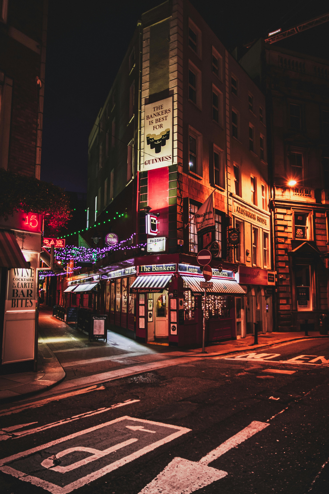
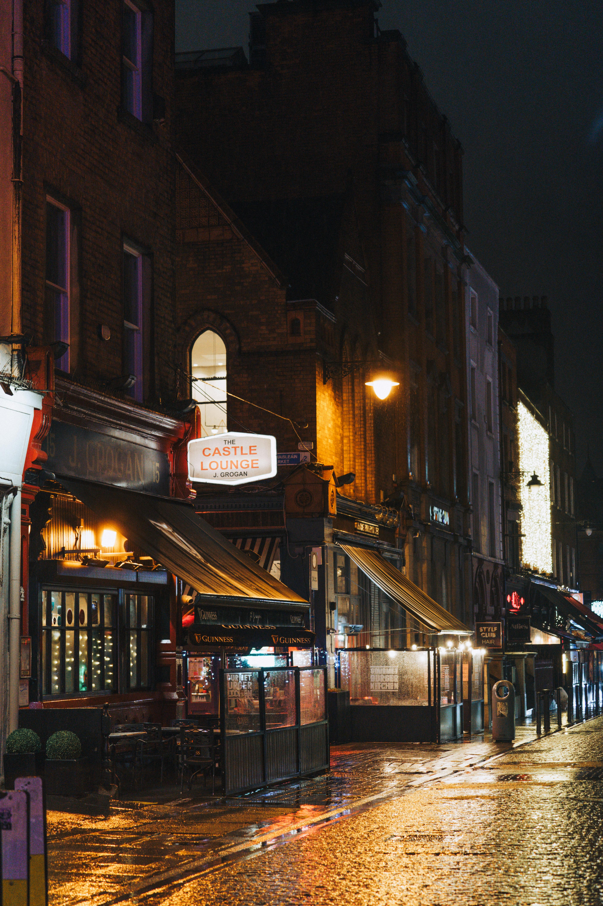
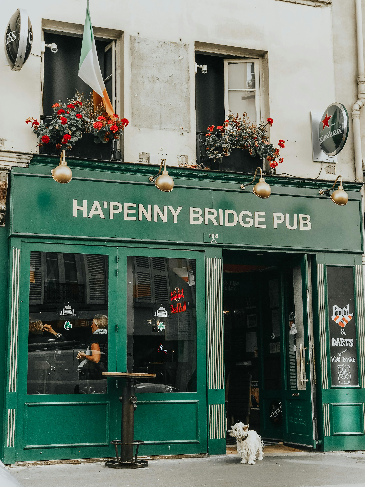
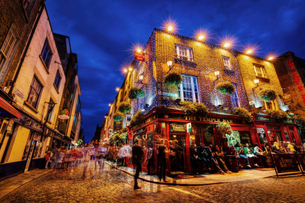

The Bankers Bar is one of Dublin's last remaining traditional Irish Pubs.

In Grogans, local artists work adorn the walls and it offers arguably the best Guinness in Dublin

The Ha'penny Bridge Pub is a Victorian waterfront pub in Dublin's cultural quarter with delicious pub grub

The Temple Bar Pub is a well known venue in Temple Bar, beautiful inside and out but with probably Ireland's most expensive pint